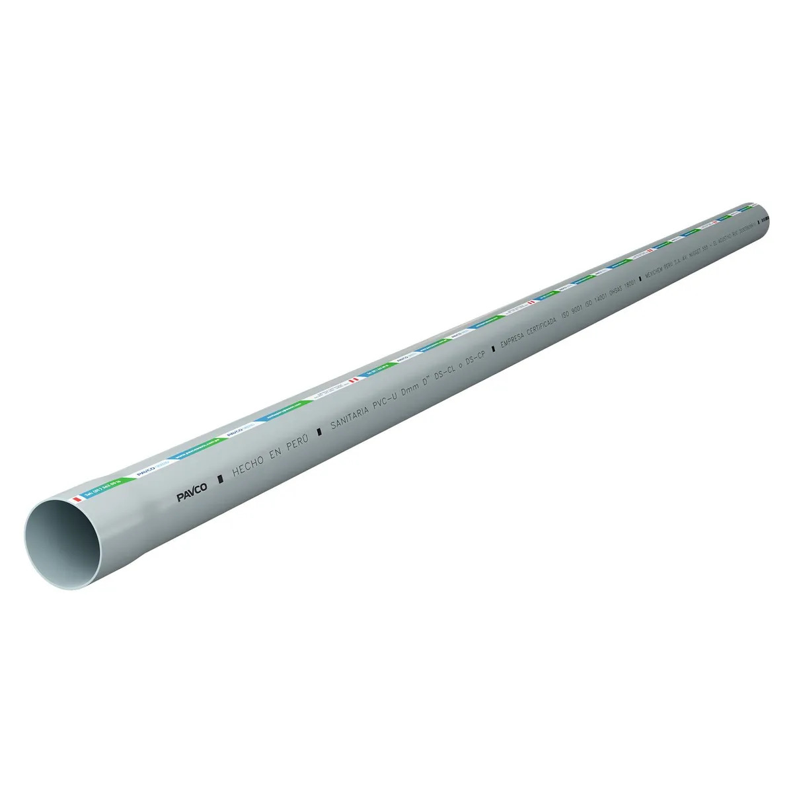

Tubo PVC sanitario

Tubo ligero y resistente a la corrosión utilizado en sistemas de desagüe. Se une con accesorios y adhesivos compatibles para formar redes que conducen aguas residuales de viviendas y edificios.